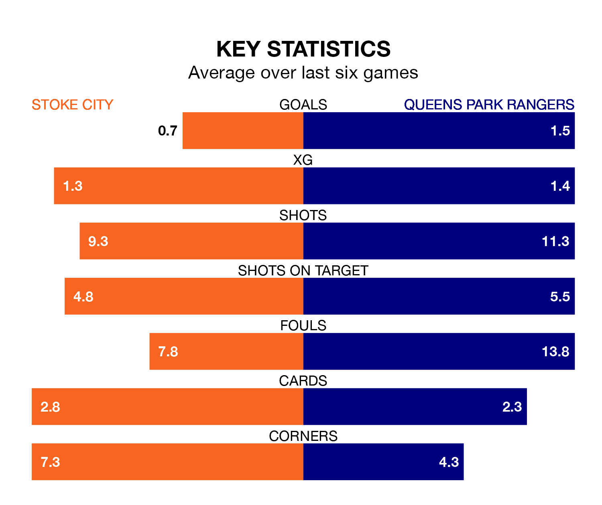

Stoke City welcome Queens Park Rangers to the bet365 Stadium on late Wednesday looking to pick up points to end their four-game losing streak.
Stoke's struggles have left them with just four points from their last six EFL Championship matches, while their opponents have earned eight from a possible 18.
QPR are 22nd in the table after 31 games, of which they have won seven and drawn eight, earning 29 points.
Stoke are two places ahead of Rangers in 20th, with eight wins and eight draws putting them on 32 points.
In the last 10 years, Stoke and QPR have played each other on 13 occasions. Stoke won three of them, QPR five, and they drew five times.
On average, the Potters scored 1.2 goals and QPR 1.4 in those matches.
Their last meeting was on November 28, when QPR won 4-2 at home.
With 29 goals in 31 games so far this season, City are scoring at below the league average rate with 0.9 goals per game. And they are conceding more than average, letting in 45 goals at a rate of 1.5 per game.
The away team are also below average scorers, with 0.9 goals per game, compared to a league average of 1.4. They have conceded 1.4 goals per game.
Stoke's last match was on Saturday, a 3-1 loss against Blackburn Rovers, with Niall Ennis getting the goal for the Potters.
QPR drew 2-2 with Norwich City last time out, also on Saturday, with Jack Colback and Michael Frey on the scoresheet.
Updated: 09:02 (UTC), 13/02/24